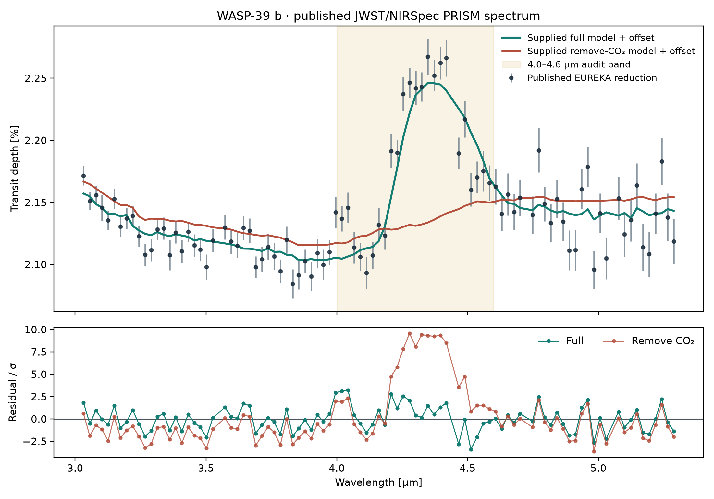

Prespecified synthetic benchmark
Held-out performance with controls.
Scope boundary: these values measure recovery from the same analytic template family used to create the data. They are not evidence of biosignature detection, life, or observed-spectrum validity.

Published spectrum audit
One real-data check, kept separate.
The project also compares the published WASP-39 b JWST/NIRSpec PRISM spectrum with the publication-supplied full and remove-CO₂ ScCHIMERA curves from Zenodo DOI 10.5281/zenodo.6959427.
Across 93 common wavelength bins, the offset-fitted curves give χ² = 179.19 and 953.59 respectively. The descriptive difference is 774.40; 680.87 comes from 4.0–4.6 μm. This is a reproduction audit, not a new retrieval or detection significance.
Experimental design
Why the benchmark is auditable.
360 atmosphere families are divided into disjoint train, tune, calibration and test partitions before final evaluation.
Permuted labels produce 0.22352 macro MAE, exposing performance that could arise without the intended input–target relation.
Metrics, per-species results, noise sensitivity, block deletions and provenance hashes are committed with the code.